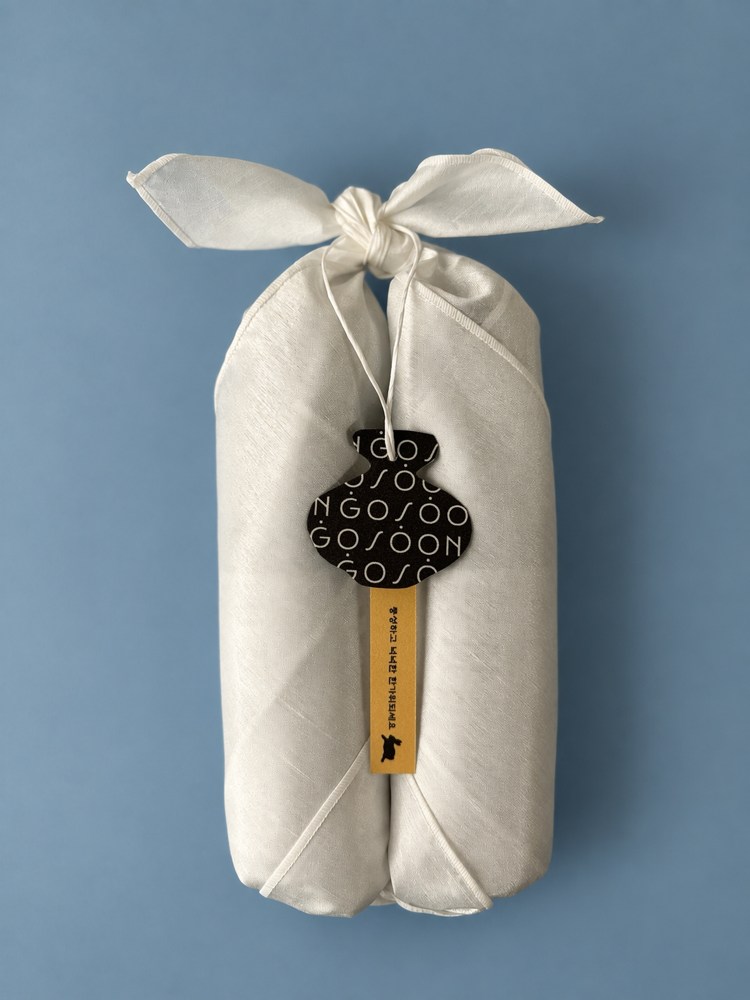
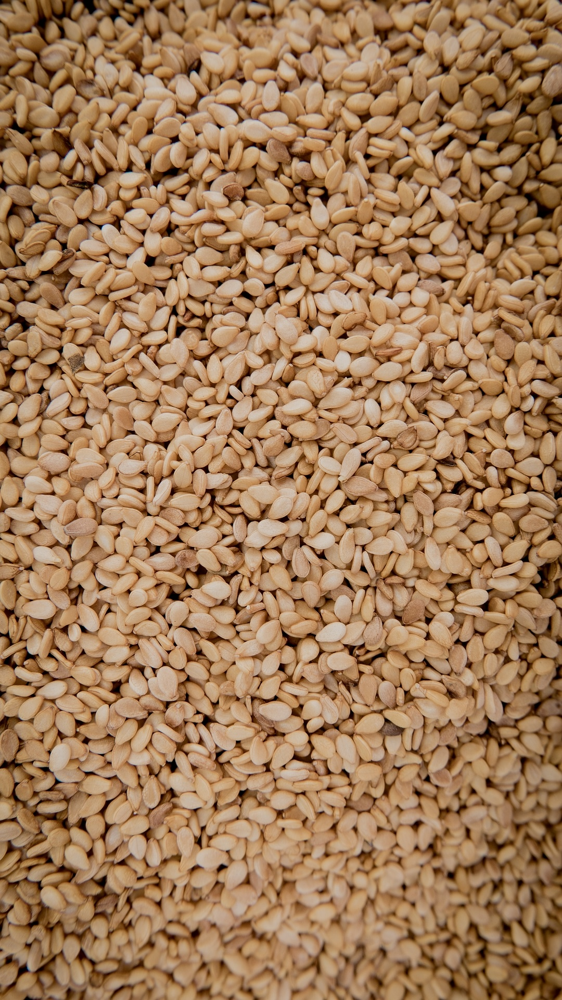
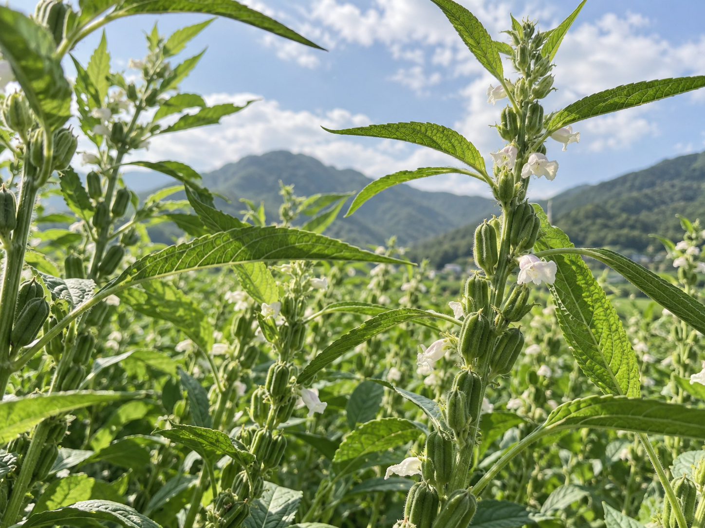
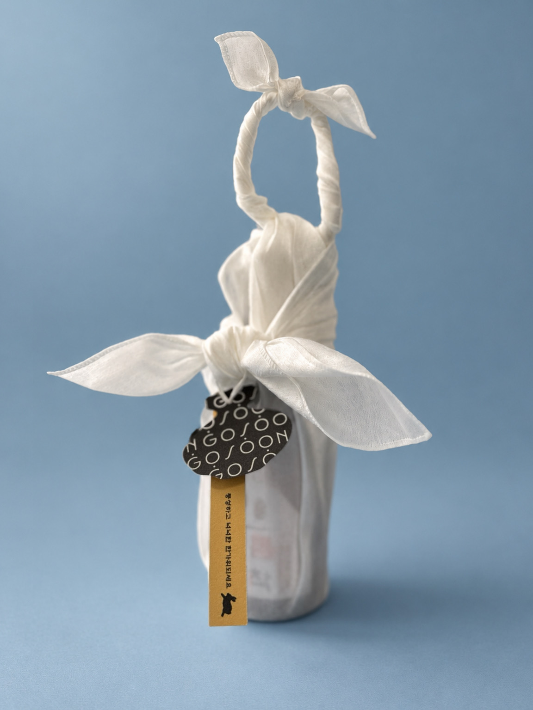

GOSOON Harvest 2026
1년에 딱 한 번,
지금만 나오는 햇참기름
Only now, only this season.

GOSOON Harvest 2026
1년에 딱 한 번,
지금만 나오는 햇참기름
30병 한정
Only now, only this season.

30병 한정
GOSOON Harvest 2026
1년에 딱 한 번,
지금만 나오는 햇참기름
Only now, only this season.

9월, 지금이
햇참깨의 계절!
충북 음성에서 자란 햇참깨를
발로 뛰어 힘들게 구해왔어요
고온에서 오래 볶아 나타나는
특유의 스모키한 고소함은 없애고
햇깨가 가진 신선함과 향긋함을 살려
저온 로스팅한 참기름이에요
9월, 지금이
햇참깨의 계절!
여러분만 아세요
올해 참깨는 풍년이래요
우리에게 참기름은 참 익숙하지만,
국내산 참깨는 구하기가 하늘의 별 따기예요.
수입산 참깨에 밀려
국내 참깨 농가는 점점 줄어들고,
국내산 참깨 자급률은 10%도 채 되지 않거든요.
그런데 올해는 참깨가 풍년이래요.
9월, 지금이
햇참깨의 계절!
국내산 참깨의 풍년
우리에게 참기름은 참 익숙하지만,
국내산 참깨는 구하기가 하늘의 별 따기예요.
수입산 참깨에 밀려
국내 참깨 농가는 점점 줄어들고,
국내산 참깨 자급률은 10%도 채 되지 않거든요.
그런데 올해는 참깨가 풍년이래요.

매년
“올해도 작황이 안 좋대.”
하는 이야기만 듣다가
이렇게 반가운 소식이 또 있을까요.
제철을 맞은 참깨.
이때 아니면 또 1년을 기다려야 하니까요.
올해 수확한 참깨로 만든
햇참기름, 지금 만나보세요

매년
“올해도 작황이 안 좋대.”
하는 이야기만 듣다가
이렇게 반가운 소식이 또 있을까요.
제철을 맞은 참깨.
이때 아니면 또 1년을 기다려야 하니까요.
올해 수확한 참깨로 만든
햇참기름, 지금 만나보세요

Fresh press
받자마자 향을 맡고, 생으로 한 숟가락 맛봐주세요.
제철 햇깨가 가진 맛을 가리는 고온 로스팅 대신,
저온에서 천천히 볶아 그 계절의 맛을 담았습니다.
햇깨의 신선함과 향긋함은 살리고,
어떤 음식에도 자연스럽게 어우러지는 고소한 기름이에요.
Less, but sincere
포장을 더한다고
정성이 커지진 않습니다
고순은 천 한 장, 매듭 하나로
마음을 전합니다.

매 년 선물세트를 받으면
막상 받을 때는 행복하지만
버리려면 아깝기도 하고,
처치곤란인 선물세트들..
어떻게 할까 고민하다가
과감하게 보자기포장만으로
정성을 담았습니다.

이번 추석,
평범한 참기름 대신
올해의 햇참기름을 선물하세요.
고순 햇참기름을
정성 가득한 보자기 포장으로 준비했습니다.
GOSOON HARVEST 2026
제철을 선물하세요
1년에 딱 한 번,
지금만 나오는 햇참기름
이번 추석,
평범한 참기름 대신 올해의 햇참기름을 선물하세요.
이번 햇참기름, 딱 30병만 준비했어요.
지금 놓치면 내년까지 기다려야 해요.
GOSOON · Chuseok gift
프로필 링크에서 만나보세요